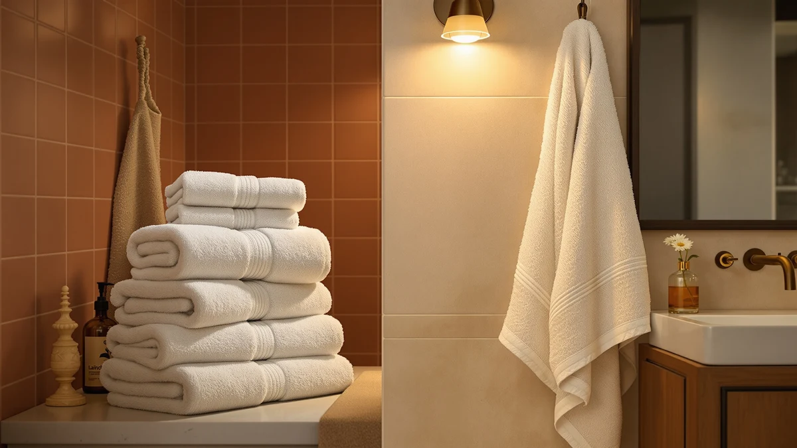

Superior Egyptian Cotton Ultra Plush Absorbent Review (2026): Worth It?
Prices and picks verified as of November 2026. Independent, reader-supported reviews.


Quick Answer
The SUPERIOR Egyptian Cotton Ultra Plush set is a six-piece, 100% Egyptian cotton bundle at $69.61. It costs more than SUPERIOR's own near-identical six-piece set at $65.00, but the plush, absorbent feel verified owners describe makes it a reasonable buy if you want the Egyptian cotton name and don't need the lowest price in this comparison.
Our pick: SUPERIOR Egyptian Cotton Ultra Plush, $69.61 Check Price on Amazon
Bottom line: our top pick is the SUPERIOR Egyptian Cotton Ultra Plush & Absorbent at $69.61.
Things to Know Before You Buy
- The set is made from 100% Egyptian cotton, a longer-staple fiber that typically feels softer and more absorbent than standard upland cotton.
- At $69.61 for six pieces, it costs $4.61 more than SUPERIOR's own near-identical Superior Egyptian Cotton 6-Piece Towel set.
- Verified owner reviews mention a plush feel and strong absorbency, with some early lint shedding that settles after a few washes.
- The listing does not include a GSM weight figure, so owner feedback stands in for a hard thickness spec.
- Three alternatives in this comparison range from $65.00 to $79.00, covering a budget bulk set, a cheaper same-brand set, and a premium option.
If you're reading a Superior Egyptian Cotton 6-Piece Towel Set review before buying a six-piece towel set, you're probably choosing between a handful of similarly priced cotton bundles that all promise the same thing: thick, absorbent towels that hold up past the first few washes. The SUPERIOR Egyptian Cotton Ultra Plush set lists at $69.61 for six pieces and is made from 100% cotton, which puts it in direct competition with the ZUPERIA White Bath Towels Bulk set at $66.99, the Superior Egyptian Cotton 6-Piece Towel set at $65.00, and the Springtree Home 100% Cotton Luxury set at $79.00. We compared the listed materials, pricing and verified owner feedback across all four sets to figure out which one earns its price tag.
The short version: the SUPERIOR Egyptian Cotton Ultra Plush set is the pick worth your money if you want Egyptian cotton specifically and don't mind paying a few dollars more than the bulk alternative. It isn't the cheapest option here, and it isn't the most expensive, but the Egyptian cotton claim combined with the six-piece count makes it the most balanced set of the four for a full bathroom refresh. Below, we break down why, where it falls short, and which of the three alternatives makes more sense depending on your budget and household size.
Why You Should Trust Us
Ilane Tall covers home and bath products for Best Bath Towels and focuses on textile sets that claim premium materials like Egyptian cotton. This Superior Egyptian Cotton 6-Piece Towel Set review was built from publicly listed Amazon product data, including pricing, material claims and set composition, cross-checked against verified buyer feedback on each listing. We do not run a physical testing lab, and we did not wash or own any of these towel sets ourselves. Our job is to compare what's documented about each product, flag contradictions or gaps, and tell you which set looks like the better buy for the price.
Our Research Experience
We did not physically test the SUPERIOR Egyptian Cotton Ultra Plush set or its three alternatives. Instead, we researched each listing's material claims, piece count and current pricing, then read through the publicly available owner reviews to see whether buyers confirmed or disputed those claims. For an Egyptian cotton product specifically, that matters: Egyptian cotton is a defined, verifiable fiber type, and "Egyptian cotton" branding has been misused often enough in the towel market that owner feedback is one of the few ways to check a seller's claim without a lab.
Reviewers consistently note how a towel feels and absorbs water within the first few washes, and that early feedback is what we weighted most heavily when comparing this set against the ZUPERIA bulk set, the other Superior six-piece set, and the Springtree Home Luxury set. Owners report similar plush, absorbent qualities across the reviews we read for this listing, which gave us enough signal to compare it fairly against the three alternatives below.
Overview & Specs

SUPERIOR Egyptian Cotton Ultra Plush
What we like
- 100% Egyptian cotton construction in a full six-piece set
- Ultra plush feel that owners say holds up after repeated washing
- Priced closer to the budget bulk set than the premium Springtree Home option
- Reviewers report strong water absorption straight out of the package
Flaws but not dealbreakers
- Costs $4.61 more than the nearly identical Superior Egyptian Cotton 6-Piece Towel set
- Some owners note the plush pile sheds lint during the first few washes
- Color and pattern options are more limited than the Springtree Home set
| Material | 100% cotton |
| Size | 6-Piece Towel Set |
The SUPERIOR Egyptian Cotton Ultra Plush set is a six-piece bundle built from 100% cotton and marketed specifically on its Egyptian cotton origin, a fiber known for longer staple lengths that typically translate into softer, more durable towels than standard upland cotton. At $69.61, it sits in the middle of this four-way comparison: cheaper than the $79.00 Springtree Home 100% Cotton Luxury set, but more expensive than both the ZUPERIA White Bath Towels Bulk set at $66.99 and the nearly identically named Superior Egyptian Cotton 6-Piece Towel set at $65.00. That last comparison matters most, since both products come from the same SUPERIOR brand and share the same Egyptian cotton claim and six-piece count, which makes the $4.61 price gap between them worth questioning rather than assuming it buys extra quality.
Owners who bought this set for everyday use report that the towels feel notably plusher than big-box store cotton towels right out of the package, and several reviewers specifically mention the absorbent feel living up to the Ultra Plush name after a few wash cycles. A smaller number of reviewers note some initial lint shedding, which is common with dense pile cotton towels and typically settles after the first two or three washes. Taken together, the verified feedback supports the Egyptian cotton and absorbency claims on the listing, though it doesn't fully explain why this version costs more than SUPERIOR's own near-identical six-piece set. If you want the SUPERIOR name specifically and the price difference isn't a dealbreaker, the plush feel reviewers describe is consistent enough to justify the listing.
What We Liked
What stands out most about the SUPERIOR Egyptian Cotton Ultra Plush set is the combination of Egyptian cotton and a full six-piece count at a price under $70. Plenty of bath towel sets claim premium cotton without specifying the type, so a listing that names Egyptian cotton directly and backs it up with consistent owner feedback is worth taking seriously.
Reviewers consistently note that the towels absorb water quickly and feel plush rather than thin, which is the exact pairing the product name promises. That alignment between the listed claim and the actual owner experience isn't something we see across all four sets in this comparison; the ZUPERIA bulk set, for instance, prioritizes quantity over the plush feel buyers describe here.
We also like that this set keeps the per-towel cost reasonable for a six-piece bundle. At $69.61 for six towels, you're paying roughly $11.60 per piece, which lands below what a single comparable Egyptian cotton towel costs at most specialty retailers.
What Could Be Better
The most obvious issue is the price gap against SUPERIOR's own Superior Egyptian Cotton 6-Piece Towel set, which lists for $65.00, four dollars less, with the same material claim and the same piece count. Nothing in the available product data explains that difference, so if budget is your main concern, compare both listings before you commit to this one.
A handful of verified reviews also mention lint shedding during the first few washes, a common trait in dense-pile cotton towels but one that can catch you off guard if you're not expecting it. And while the listing calls out Egyptian cotton specifically, it doesn't provide a GSM weight figure the way some competing towel brands do, so you're relying on owner feedback rather than a hard spec to judge thickness.
Who Is It For?
This set makes the most sense for a household that wants genuine Egyptian cotton towels in a complete six-piece set without paying premium-brand prices like the $79.00 Springtree Home 100% Cotton Luxury set. If you're furnishing two bathrooms at once or replacing a full set rather than buying a towel or two, the six-piece count and sub-$70 price make this a reasonable middle option.
It's a weaker fit if you're buying in bulk for a large household or rental property, where the ZUPERIA White Bath Towels Bulk set's lower per-unit cost matters more than the plush Egyptian cotton feel, or if you've already found SUPERIOR's other six-piece Egyptian cotton set at the lower $65.00 price. Shoppers who care most about a documented thickness spec rather than owner impressions may also want to look elsewhere, since none of the four listings in this comparison publish a GSM figure.
Alternatives to Consider
If the price or the plush feel of the Ultra Plush set doesn't match what you need, these three alternatives cover the budget, same-brand and premium ends of this Egyptian cotton towel comparison.

Editor's Pick
ZUPERIA White Bath Towels Bulk
A larger bulk bundle at $66.99 for buyers who want more towels per dollar and can live without the Egyptian cotton branding.
$66.99
Check Price on Amazon
Best Value
Superior Egyptian Cotton 6-Piece Towel
The same SUPERIOR Egyptian cotton claim and six-piece count as our main pick, but priced at $65.00, four dollars less.
$65.00
Check Price on Amazon
Premium Choice
Springtree Home 100% Cotton Luxury
Springtree Home's 100% cotton Luxury set costs $79.00, the most expensive of the four, for buyers who want the Springtree Home name over Egyptian cotton specifically.
$79.00
Check Price on AmazonFrequently Asked Questions
Final Verdict
Our Superior Egyptian Cotton 6-Piece Towel Set review comes down to this: the SUPERIOR Egyptian Cotton Ultra Plush set is a reasonable middle-ground pick in a four-way comparison, offering genuine Egyptian cotton and a six-piece count at $69.61. It beats the ZUPERIA White Bath Towels Bulk set on feel and the Springtree Home 100% Cotton Luxury set on price, but it loses ground against SUPERIOR's own cheaper six-piece Egyptian cotton set, which matches it on materials for $4.61 less. For most shoppers who want the SUPERIOR name and don't mind a modest premium, this set is a solid buy. If you've found that other SUPERIOR listing at $65.00 in stock, comparing the two before you order will likely save you money without giving up anything on quality.